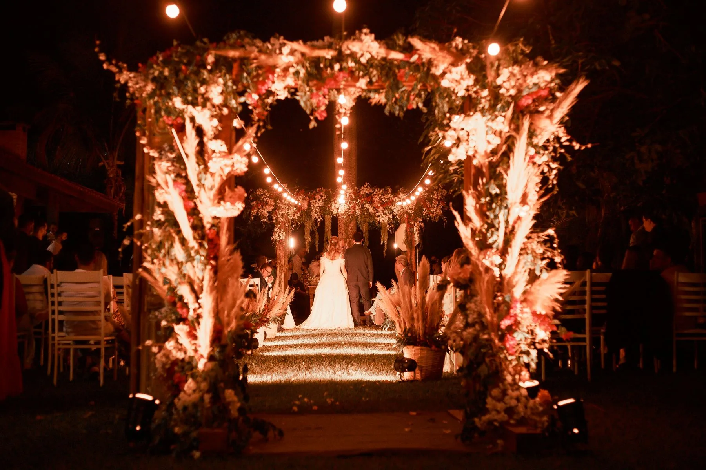
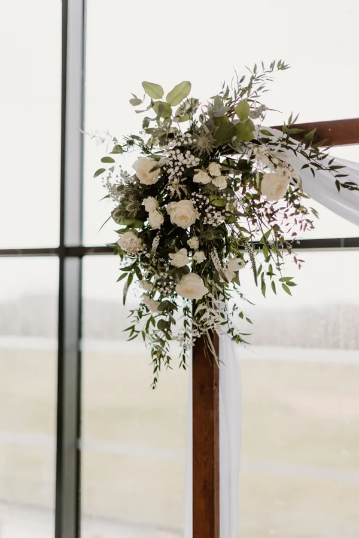
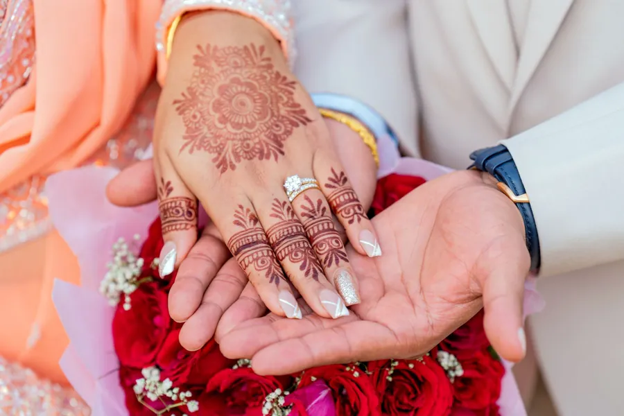
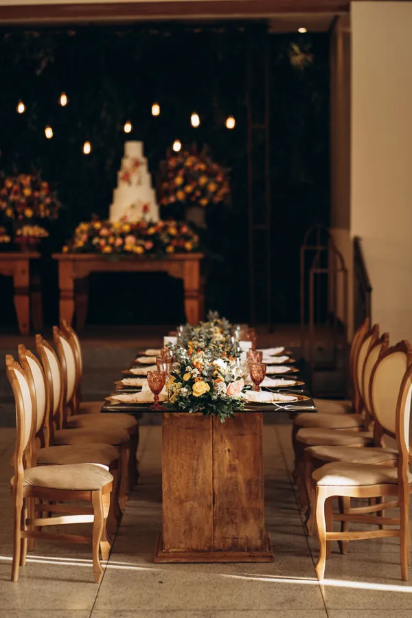
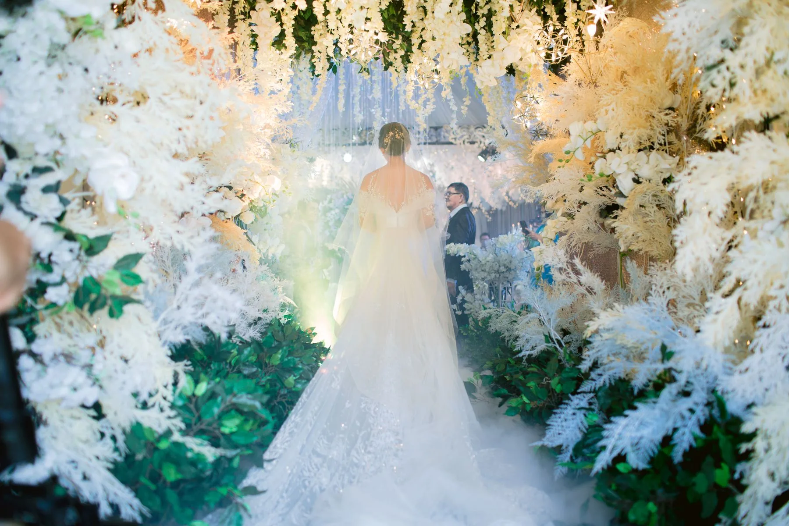

Masalınızı
birlikte yazalım.
Etkinliğin türünü, tarihini ve kişi sayısını seçin; ilk mesajınız kendiliğinden yazılsın ve WhatsApp'tan bize ulaşsın.
Bir düğün, bir günlük değil; bir ömürlük hatıradır. Biz o hatırayı ışıkla, çiçekle ve düzenle kurarız.
Bu metin örnektir. Yayında burada işletmenin kendi hikayesi, kurucunun cümleleri ve sahneden kareler yer alır.


Kına, sıcak bir başlangıç.
Kına gecesi için sahne, oturma düzeni ve ışık. Instagram'daki kına çalışmalarınız yayında burada bir galeriyle durur.
- Sahne ve oturma düzeni
- Mum ve çiçekle sıcak ışık

Düğün ve giriş yolu.
Misafirleri karşılayan giriş yolundan tören alanına, tek bir dilde kurulan sahne. Yayında kendi giriş yolu tasarımlarınız yer alır.
- Giriş yolu ve kemer tasarımı
- Tören ve davet alanının düzeni

Masa tasarımı.
Masa düzeni, mum, tabak ve çiçeğin uyumu. Themasflower ile çiçek tasarımı aynı elden, aynı dilde.
- Masa ve sofra düzeni
- Çiçek ve mumla tasarım

Ve sonra, bir masal gibi
başlar her şey.
Hayalinizi seçin,
mesajınız yazılsın.
Fiyat yok, form yok: seçtikleriniz sağdaki kâğıda dökülür ve WhatsApp'ta tek dokunuşla bize gelir.
Sahneden kareler.
Temsilî fotoğraflar; yayında bu şerit Instagram'daki kendi işlerinizle dolar. Büyütmek için dokunun.
Denizli'de, bir mesaj uzağınızda.
- WhatsApp / GSM
- 0533 165 36 29
- @masalorganizasyon20
- Instagram'da öne çıkanlar
- Kına
- Düğün
- Giriş yolu
- Masa tasarımı
- Themasflower
- Collesia Otel
- Villa Castelio
- Ruma
Yayında burada Google Haritalar'da adresiniz, çalışma saatleriniz ve yol tarifi düğmesi olur. Bu bilgileri sizden alıp ekleriz.